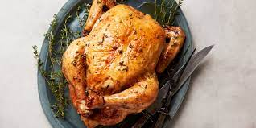

How to cook chicken

Chicken is an extremly nice source of protein and can be seen as a way to help your diet and your over all well being. Today im going to be showing you how to cook chicken safely and tastefully so you can be strong and healthy.
- The first step towards making chicken that is nice and tasteful is the defrosting step. Make sure to defrost your chicken overnight to ensure the bacteria is not infecting your meal.
- Seasoning is improtant to make your chicken tasty, You can use whatever you want but for the purposes of this tutorial we would be using smoked paprika, salt, pepper and garlic powder.
- Lather in your seasoning and make sure each piece of chicken is properly covered.
- Pre heat a pan on medium heat for aroudn two minutes.
- Place your chicken on the pan and turn over every couple minutes.
- When cooked take off pan. If youre unsure how to tell if the chicken is cooked, split one piece in half and make sure there are lines along the insides and not soft pink tissue.
Cooking chicken could be tough, however, with practice and proper technique you cna have safely cooked delicous chicken. Having these skills can help you in life and with your future endevours. Good luck with your chicken cooking and have fun!